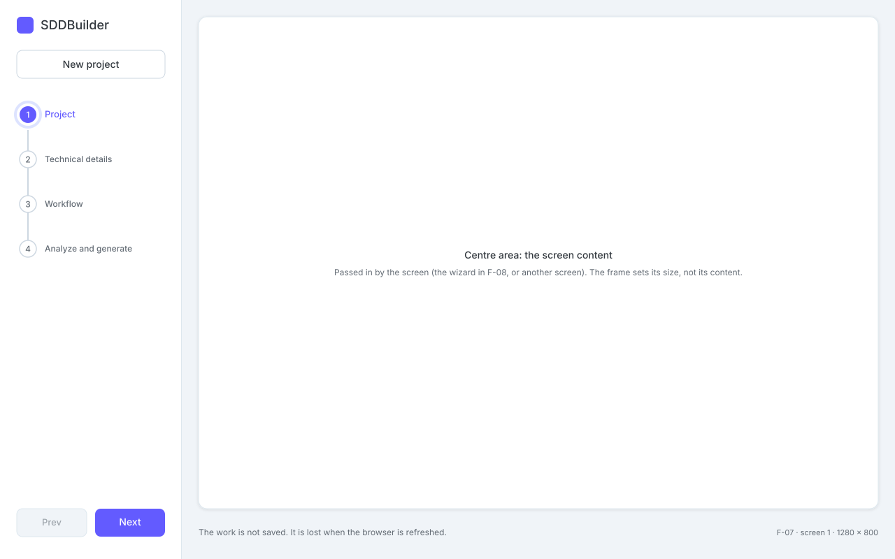
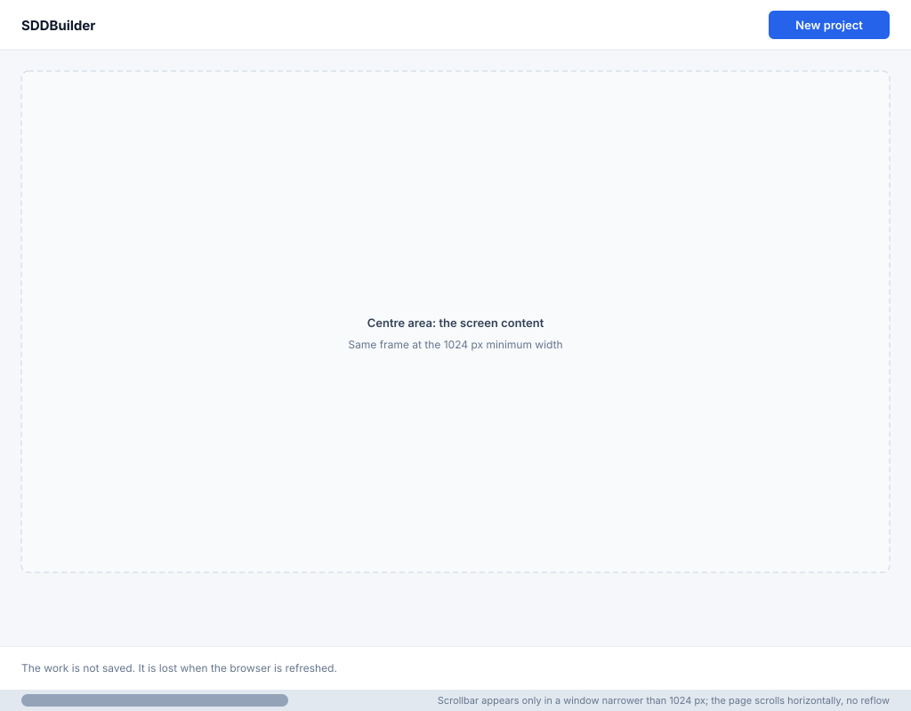

The shared frame every screen uses, in the F-11 style: a left panel with the wordmark, New project, the stepper and Prev and Next; the grey content area with the footer note. Wireframes only; read screens.md.
Left panel with the wordmark, New project, the vertical stepper and Prev and Next; the content card; the footer note that the work is not saved, inside the grey area.

The same frame at 1024 by 768. The left panel stays at 260 px and the content area takes the rest. Below 1024 px the page scrolls horizontally.
